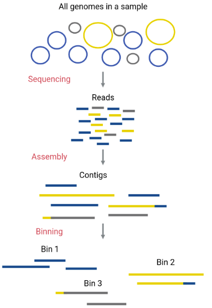
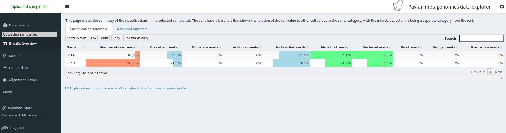
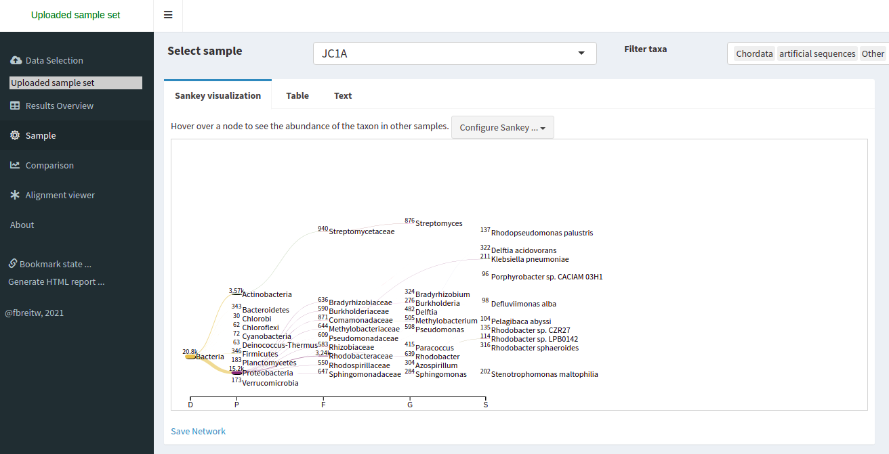

Starting a Metagenomics Project
Figure 1
Image 1 of 1: ‘Flow chart that shows the steps of a metagenomics project: Experimental design, Sampling, DNA extraction, Sequencing, Read quality, Assembly, Binning, Bin quality and Data analysis ’

Figure 2
Image 1 of 1: ‘Photography of a pond in Cuatro Ciénegas’

Assessing Read Quality
Figure 1
Image 1 of 1: ‘Flow diagram that shows the steps: Sequence reads, Quality control, Assembly, Binning and Taxonomy’

Figure 2
Image 1 of 1: ‘Flow diagram that shows the steps: Sequence reads and Quality control.’

Figure 3
Image 1 of 1: ‘Quality graph showing a boxplot for each sequence position in the x-axis, and the Phred score in the y-axis. The background is colored red for the Phred scores 0 to 20, yellow for the scores 20 to 28, and green for the scores 28 to 38. All of the boxes for each position are in the green area.’

Figure 4
Image 1 of 1: ‘Graphic of boxplots, where the first ones are in the good range of scores of the y-axis and extend to the acceptable and bad ranges of scores toward the right of the x-axis’

Trimming and Filtering
Figure 1
Image 1 of 1: ‘Diagram showing the parts of the sequence that are reviewed by each parameter and the parts that are maintained or discarded at the end of the process. The Illuminaclip parameter removes the adapters, and the SlidingWindow scans the read by sections and removes a part of the read below the quality threshold. We remain with a trimmed read that has a valid quality.’

Metagenome Assembly
Figure 1
Image 1 of 1: ‘Three diagrams depicting the three assembly algorithms: The Greedy extension starts with any read, extends it whit the reads that make a match to make a contig, it continues with a different read when the previous contig can not be extended anymore. The Overlap Layout consensus finds every pairwise overlap, makes a layout graph with all the overlaps and chooses consensus sequences to make the contigs. The De Bruijn Graphs divides the reads in k-mers, makes a k-mer graph that shows all the overlapping k-mers, and chooses paths from the graph to make the contigs. ’
![Three diagrams depicting the three assembly algorithms: The Greedy extension starts with any read, extends it whit the reads that make a match to make a contig, it continues with a different read when the previous contig can not be extended anymore. The Overlap Layout consensus finds every pairwise overlap, makes a layout graph with all the overlaps and chooses consensus sequences to make the contigs. The De Bruijn Graphs divides the reads in k-mers, makes a k-mer graph that shows all the overlapping k-mers, and chooses paths from the graph to make the contigs.](fig/03-04-01.png)
Metagenome Binning
Figure 1
Image 1 of 1: ‘Diagram depicts the DNA sequences in the original sample as circular chromosomes of three different taxa. After sequencing, the DNA sequences of the three different taxa are mixed as small linear reads; after the assembly, we have contigs, each corresponding to a single taxon, except for the ones with a bad assembly that has sequences of different taxa in the same contig, after the binning taxa separate the contigs.’
{kind=link}
Taxonomic Assignment
Figure 1
Image 1 of 1: ‘Diagram of a taxonomic tree with four levels of nodes, some nodes have a number from 1 to 3, and some do not. From the most recent nodes, one has a three, and its parent nodes do not have numbers. This node with a three is selected.’

Figure 2
Image 1 of 1: ‘Flow diagram that shows how the initial composition of 33% for each of the three taxa in the sample ends up being 4%, 72%, and 24% after the biases imposed by the extraction, PCR, sequencing and bioinformatics steps.’

Figure 3
Image 1 of 1: ‘Krona displays a circled-shape bacterial taxonomy plot with abundance percentages of each taxon’

Figure 4
Image 1 of 1: ‘Pavian website showing the upload of two reports’

Figure 5
Image 1 of 1: ‘Results Overview tab of the Pavian website where it shows the number of reads classified to several categories for the two samples’
{kind=link}
Figure 6
Image 1 of 1: ‘Sankey type visualization that shows the abundance of each taxonomic label in a tree-like manner’
{kind=link}
Figure 7
Image 1 of 1: ‘A bar chart of the abundance of reads of the two samples, showing a segment for the read identified at the specific taxon and another segment for the number of reads identifies at children of the specified taxon’

Figure 8
Image 1 of 1: ‘A table of the same format as the Kraken report but for both samples at once.’

Exploring Taxonomy with R
Figure 1
Image 1 of 1: ‘A table where the taxonomic identification information of all OTUs is displayed. Each row represents one OTU and the columns represent its identification at different levels in the taxonomic classification ranks, begging with Kingdom until we reach Species in the seventh column.’

Figure 2
Image 1 of 1: ‘The same table we saw in Figure 3 but with informative names in each of the columns. Now, we can see which of the columns are associated with which taxonomic classification rank’

Figure 3
Image 1 of 1: ‘A table where the abundance of each OTU in each sample is shown. Each row represents one OTU and the columns represent the samples. In the intersection, a number indicates how many sequenced reads of that OTU are present in that sample.’

Figure 4
Image 1 of 1: ‘The OTU number is in the leftmost space of the table as a row name for the searched species.’

Diversity Tackled With R
Figure 1
Image 1 of 1: ‘Alpha diversity diagram: In lake A, we have three fishes, each one of a different species. On lake B, we have two fish, each of a different species. Moreover, we have four fish in lake C, each of different species.’

Figure 2
Image 1 of 1: ‘ Alpha and Beta diversity diagram: Each Lake has a different number of species, and each species has a different number of fish individuals. Both metrics are taken into account to measure alfa and beta diversity.’

Figure 3
Image 1 of 1: ‘In lake A, we have four different species, two of these species have three specimens each one. This Lake also has two specimens of a third species and only one specimen of a fourth specie. We got nine fish in total. Lake B has only three different species, the most populated species is also present in lake A and has five specimens, and we have only one specimen of each of the other two species. We got seven species total in lake B ’

Figure 4
Image 1 of 1: ‘A figure divided in three panels. Each of these panels represents a different alpha diversity index. Inside this section, each point represents the value assigned on this index to the three different samples. The different indexes give different values to the same sample.’

Figure 5
Image 1 of 1: ‘[decorative]’

Figure 6
Image 1 of 1: ‘[decorative]’

Figure 7
Image 1 of 1: ‘The same panels as before, but now the samples are arranged horizontally according to the values in the Shannon index panel.’

Figure 8
Image 1 of 1: ‘Plot with NMDS1 as a label in x-axis that goes from -0.4 to 0.2 and NMDS2 in y-axis that goes from -0.2 to 0.1. The plot has three dots that are not clustered in any way.’

Figure 9
Image 1 of 1: ‘The distance between the three samples, JC1A, JP4D and JP41 is shown in a plane. Each sample has a legend and a color. The color is according to the metadata treatment. There are three possible treatments in the legend: Control mesocosm, Fertilized pond, and Unenriched pond’

Taxonomic Analysis with R
Figure 1
Image 1 of 1: ‘Table containing the taxonomic information of each of the OTUs inside the three samples. Here, we can see only the Phylum column has information, leaving the other taxonomic levels blank.’
{kind=link}
Figure 2
Image 1 of 1: ‘A two-part plot contrasting the absolute versus the relative abundance of the three samples. On the right side, we can see how each of the bars has its own height, making it difficult to compare the information between samples. The right side shows three bars with the same height after the abundance was transformed to percentage inside each sample.’

Figure 3
Image 1 of 1: ‘A new two-part plot with a reassignment of the low-abundant taxa on the right side. Compared to the left legend, the one in the right has fewer groups because of the process of reassigning the taxa with an abundance lower than 0.5 % to just one group/color.’
{kind=link}
Figure 4
Image 1 of 1: ‘A new plot with three bars representing the absolute abundance of Cyanobacteria in each of the samples. Each of the colors represents a Genus. Because we see relative abundances, all the bars have the same height.’
{kind=link}
Figure 5
Image 1 of 1: ‘New reassignment to the low abundant taxa on the left part of the plot. A new class has been created that contains the taxa with less than 300 reads’

Figure 6
Image 1 of 1: ‘A new plot with three bars representing the absolute abundance of Proteobacteria in each of the samples. Each of the colors represents a Genus. Because we see relative abundances, all the bars have the same height.’

Other Resources
Figure 1
Image 1 of 1: ‘Pie chart showing the relative abundance at the phylum level, and the legend with the phylum names, read count, and percentages.’

Figure 2
Image 1 of 1: ‘Pie chart showing the relative abundance of general functional categories, and the legend with the category names, read count, and percentages.’
{kind=link}
Figure 3
Image 1 of 1: ‘Pie chart showing the relative abundance of specific functional categories, and the legend with the category names, read count, and percentages.’
{kind=link}